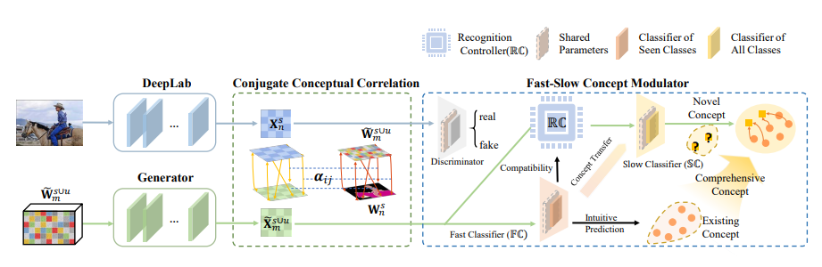
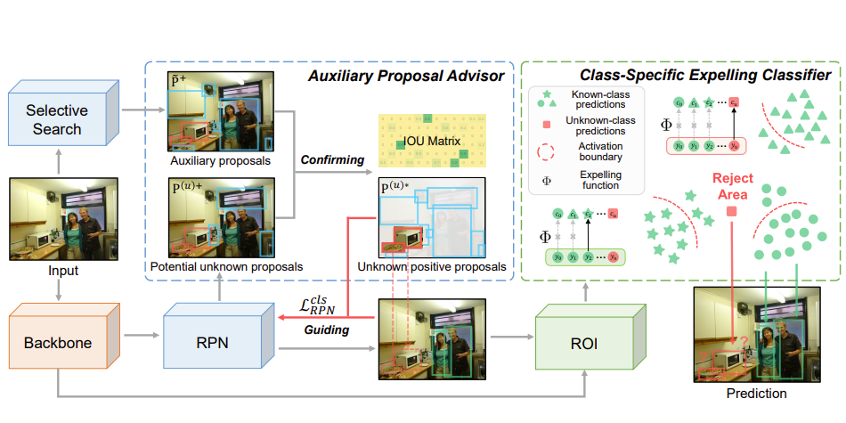
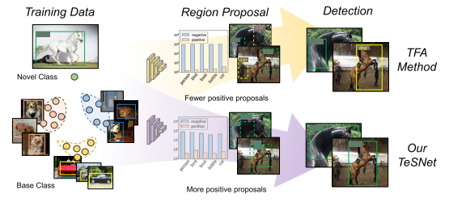
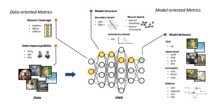
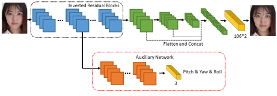
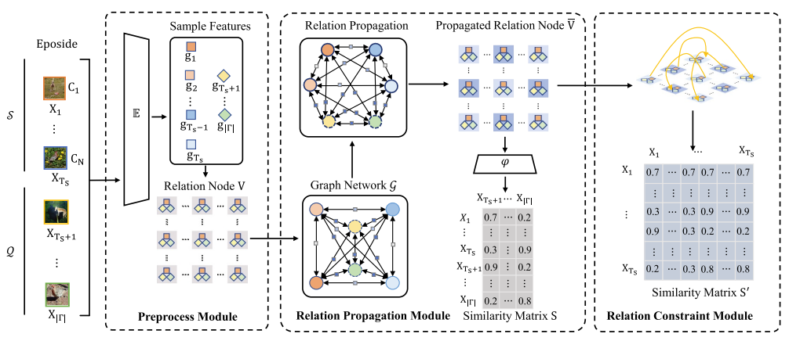

Yuqing Ma（马宇晴）
 |
Associate Professor State Key Laboratory of Software Development Environment Email: mayuqing@buaa.edu.cn or
You can also find my homepage [here]. |
About Me
I’m currently an associate professor with the Institute of Artificial Intelligence at Beihang University, Beijing, China. Previously I was a postdoctoral fellow in NLSDE at Beihang University, advised by Xianglong Liu. I received my PhD from Beihang University (2021), under the supervision of Prof. Wei Li. Before that, I received my B.Sc. degree in Computer Science and Technology, Shandong University, in 2015.
Updates
Dec, 2023: two papers accepted for AAAI.
Nov, 2023: one paper accepted for IEEE TCSVT.
Mar, 2023: one paper accepted for CVPR.
Feb, 2023: two papers accepted for Science China (Information Sciences).
Jan, 2023: one paper accepted for Pattern Recognition.
Dec, 2022: one paper accepted for IEEE TMM.
Jul, 2022: receiving grants from CCF-Baidu SongGuo.
Jul, 2022: one paper accepted for IEEE TCYB.
Jun, 2022: receiving a grant from China Postdoctoral Science Foundation.
Jul, 2021: one paper accepted for ICCV.
May, 2021: one paper accepted for IEEE TNNLS.
Research Interests
My research interests mainly focus on open-world cognitive inference and artificial intelligence:
Open World Recognition: Open-World Object Detection for natural images, Object Detection for X-ray Security Inspection [link]
Generative Adversarial Network: Image Editing, Adversarial Example, Adversarial Training
Few-Shot Learning: Meta-Learning, Metric-Learning
Publications
Conference Papers
 |
|
|  |
|
|  |
|
 |
|
 |
|
 |
|
 |
|
 |
|
 |
|
 |
|
 |
|
 |
|
 |
|
Journal Papers
|  |
|
|  |
|
|  |
|
|  |
|
 |
|
 |
|
 |
|
 |
|
 |
|
Main Awards & Honors
Bronze Award of Beijing Invention and Innovation Competition (134/1600), 2022.12.
Outstanding Graduates of Beijing, Beihang University, 2021.06.
top 40 in the 2020 Baidu Scholarship, BaiDu, 2020.05.
the Academic Excellence Foundation of BUAA for PhD Students, Beihang University, 2020.06.
National Scholarship, China, 2019.09.
Tencent Rhino-Bird Elite Training Program, Tencent, 2018.
IJCAI-18 Travel Grant, IJCAI, 2018.07.
First-grade Excellent Study Scholarship, Beihang University, 2018.09.
Second-grade Excellent Study Scholarship, Beihang University, 2017.09.
Second-grade Excellent Study Scholarship, Beihang University, 2016.09.
Professional Activities
Conference / Jouranl Reviewer / Program Committee Member
IJCAI 2023
IEEE TNNLS
Pattern Recognition
IJCAI 2022
ICCV 2021
ACM MM 2021
CVPR 2021
IEEE TIP
ACM MM 2020
...
Education
Sep. 2015 - Jun. 2021
- Ph.D. student in Computer Science, School of Computer Science and Engineering, Beihang University
- Advisor: Prof. Wei Li
Sep. 2010 - Jun. 2015
- B.Sc in Computer Science, School of Computer Science and Technology, Shandong University